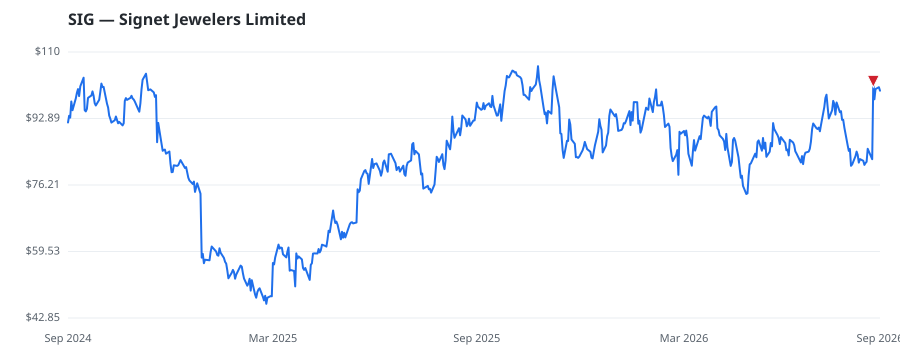

bullish · bearish · n/a — dots: price>SMA10 · SMA10>SMA50 · SMA50>SMA200 · up>down volume (20d)
Retailing · mid cap

Signet Jewelers Ltd is a retailer of diamond jewelry. Its merchandise mix includes bridal, fashion, watches, and others. The bridal category includes engagement, wedding, and anniversary purchases. Its segments are the North America segment, the International segment, and the Other segment. The North America segment contributes to the majority of the revenue. The North America segment generates revenue from Mall and Outlet. Geographically, it operates in the USA, Canada, the UK, and Ireland, with the maximum revenue from the USA. RETAIL-JEWELRY STORES · website
| Revenue | $6.8B | Net income | $294.4M |
|---|---|---|---|
| Operating income | $393.1M | Diluted EPS | $7.08 |
| Assets | $6.0B | Equity | $2.0B |